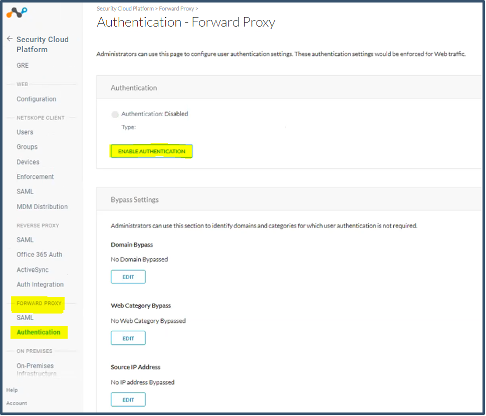
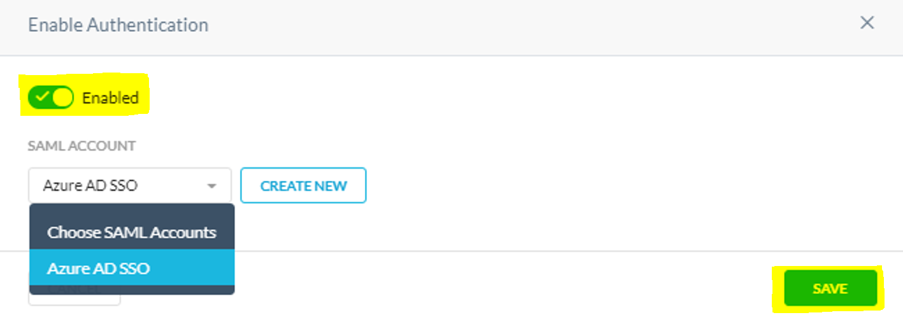
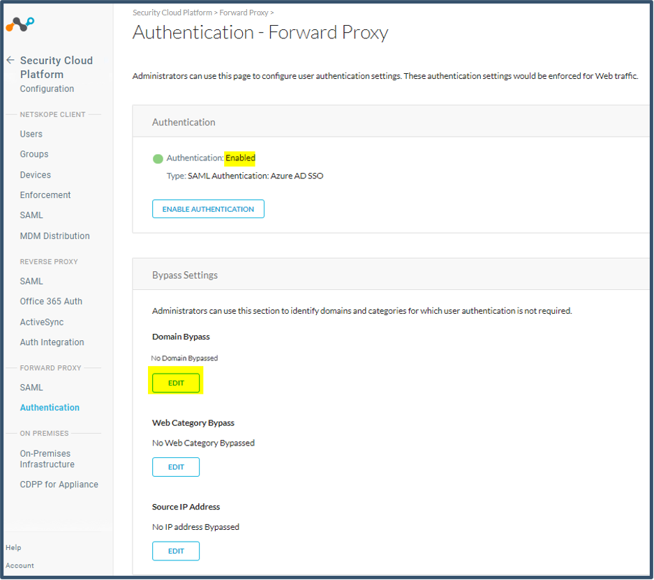
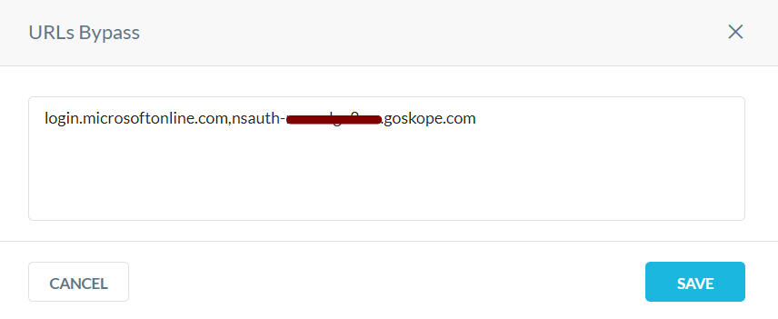
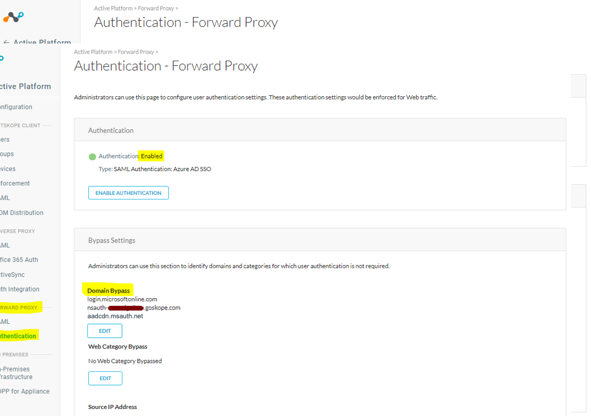

Enable Authentication and configure SSO Domain Bypass settings
Go to Settings > Security Cloud Platform > Forward Proxy > Authentication and click Enable Authentication.
 Activate Enabled , select the account, and then click Save.
 Click OK.

Authentication is enabled.
Go to the Domain Bypass section and click Edit.
 Enter these two URLs in comma-separated format.
login.microsoftonline.com,nsauth-<tenant name>.goskope.comClick Save.
 Important
These URLs need to be bypassed from authentication; otherwise, the services that perform the SAML Auth itself will get prompted for auth, go into a continuous loop, and the auth page will not load. Wildcards (like *.tld) are not valid.
Click OK.

Review the settings.
 Log out of the Netskope tenant.